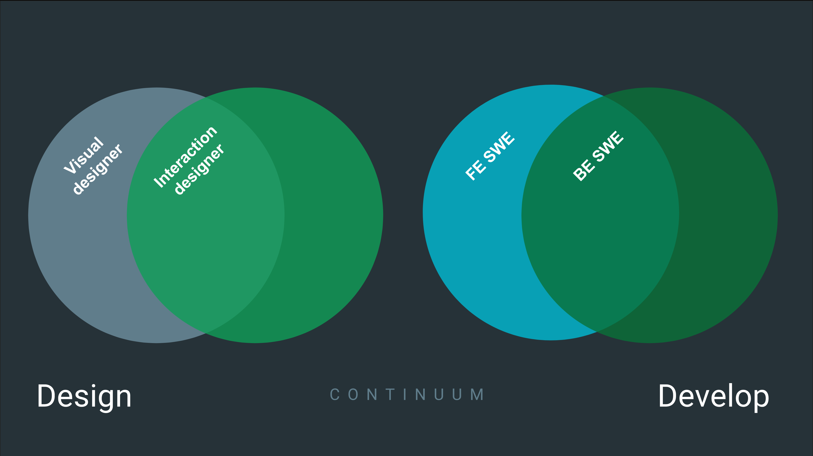
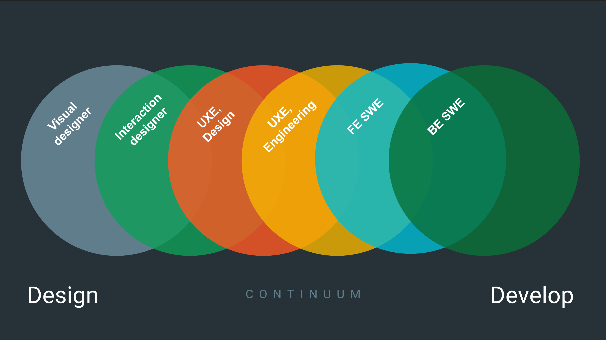
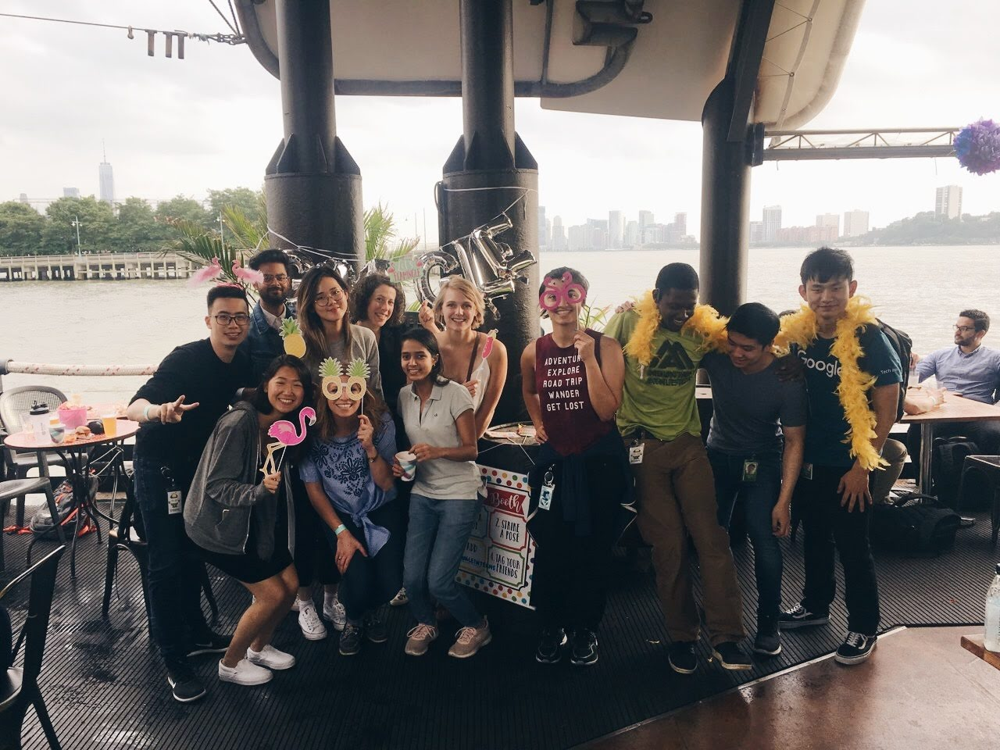
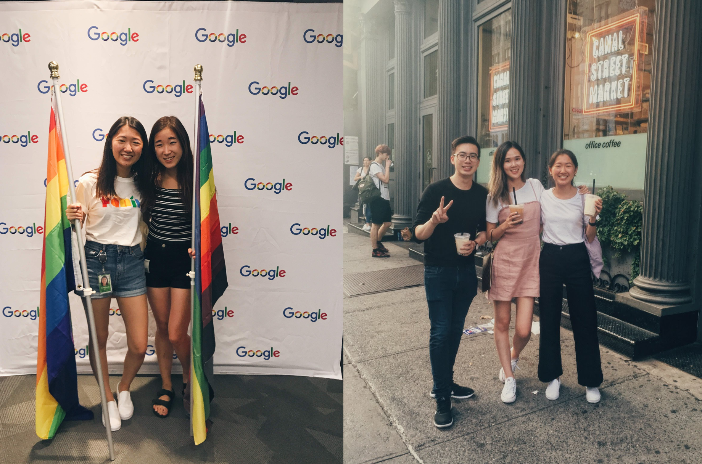

Google Internship
Role: User Experience Engineering Intern
Team: Google Sheets New York
Tools: Sketch, HTML/CSS, Javascript
Applied accessibility first lens to design and develop new experience on the Sheets team.

As a UX Engineer, I worked at the cross section of UX design and frontend development.
A UX Engineer works on a hybrid of UX Design and Frontend. They act as a bridge between UX Designers and Software Developers, thinking about design decisions as well as implementation details. Within the UX Engineering realm, there are two focuses: a developer focus and a designer focus. I sat at the developer focus and much of my work was prototyping early stage ideas.
I partnered with researchers and designers to define and deliver new features, translate concepts into living, breathing prototypes, and iterate on interactions, animations, and details to deliver the perfect experience. The very basis for this role is exploration, so it leaves much room for experimentation. A project is considered successful if we are able to gain new insight and new findings from it.
 I was fortunate to have a lot of self direction with my intern project, so I began my work by meeting with stakeholders and really understanding needs and team vision.
My intern host provided me with a prompt that required me to improve accessibility and productivity in Sheets.
At a company as large as Google, it can be difficult to figure out what explorations have been done and what hasn't. I spent a lot of time meeting with various stakeholders on the Sheets team and scraping through documentation of different proposals and past user studies. After getting a good grasp on the task at hand, I was able to synthesize everything I had learned and define a new concept.
Because of my NDA contract, I am unable to speak about specifics of my project.
I took full ownership of designing the interface and experience of my concept, and I produced 3 different iterations.
During this part of my process, I improved my Sketch skills tremendously. I learned to use various keyboard shortcuts and functionality as well as external plugins and stickersheets. I honestly think it was an incredible time to be working in design at Google because they had just released new Material changes at Google I/O, so I got to see and work first hand on UI changesd that are currently rolling out.
I also partnered with UX designers and UX writers to seek feedback during my design process. This was my first time learning about a UX writer role, much less work with one. I saw how much of an impact a small syntactic change could make in user experience. This taught me to consider carefully and deliberately about the words and phrases I choose to include in my designs.
I translated my designs into 4 living, breathing prototypes.
I built a Chrome extension to inject code into an existing webpage, and I built 3 other prototypes from scratch using frameworks built by other UX engineers.
I loved how hack-y this role was. What makes this role so different any other software development role is that it forces you to iterate quickly. It teaches you what features you can get away with making crappy, and smoke and mirrors was perfectly acceptable and even encouraged. I had to learn to narrow my focus to a specific interaction. Usually a perfectionist, this taught me to prioritize which features were most important to building a prototype useful for gaining new insight.
I created a research plan and conducted 20 user studies.
I conducted 10 user studies each for 2 of my prototypes.
One of the most interesting studies I conducted was with one power user and one new user. They were friends working on the same team: The power user had been working at Google for years whereas the new user just recently joined Google and had been using Microsoft Office up until then.
From the new user, I learned that I had made too many assumptions about the user's understanding of what I considered basic functionality. While the new user had difficulty navigating my prototype, the power user found it immensely powerful and applicable towards his current work.
This study exposed me to unique problems an enterprise product might encounter -- balancing the simplicity and explicitness required for new users with introducing powerful functionalitys needed by long time users.
From these findings, I was able to complete my third iteration. I designed a new interaction that offered powerful functionality but hid it behind a layer of abstraction, making it easily accessible for power users while also reducing clutter on the interface for new users.
I also worked on a 20% project with five other fellow UX interns, where we presented our research, designs, and insights to the entire Google Docs UX team.
Our prompt was "the future productivity". We were encouraged to take a blue sky approach and be as creative as we liked. It was great to work with the other UX interns in defining our problem space and creating a solution together.
Part of the Google Serve program, I had the opportunity to participate in a design sprint with Planned Parenthood where I helped redesigned their online appointment booking experience in order to remove friction for patients.
A group of Google designers met with Planned Parenthood designers to come up with new solutions. It was really eye opening in terms of learning about the obstacles that Planned Parenthood faces. We all can read about the policies and legislation that are currently affecting Planned Parenthood's work, but nothing compares to talking to the people on the frontlines of the reproductive movement. The effects ripple so far out and it causing so many more challenges than I had ever even thought to consider.
One issue that really resonated with me was that all of the brick and mortar Planned Parenthood clinics are franchised and individually owned. This creates an obstacle when trying to create a cohesive voice or operational system. This was the main pain point we addressed, creating a streamlined online booking system for individually run clinics.
I am beyond grateful for this internship experience. It was incredibly humbling to get to work alongside such talented individuals.
It was undeniably intimidating to be working with a group of 10 other UX interns who were all at least 3 years older than me, but I ended up making some of my closest friends this summer. Maybe it was the small intern class or maybe it was the unfamiliar and amazing city we all got dropped in for 3 months, but it was an experience I wouldn't trade for anything in the world.
 Use dark mode